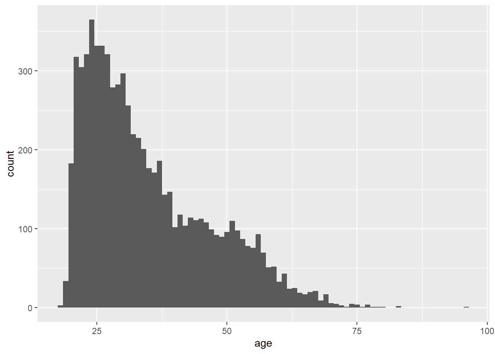
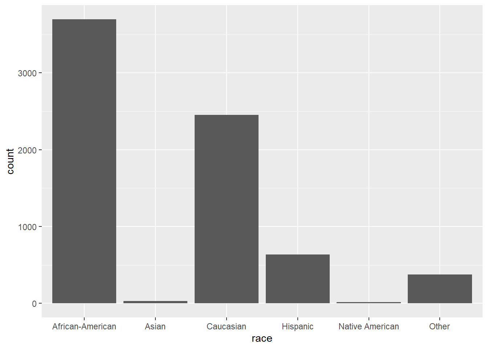
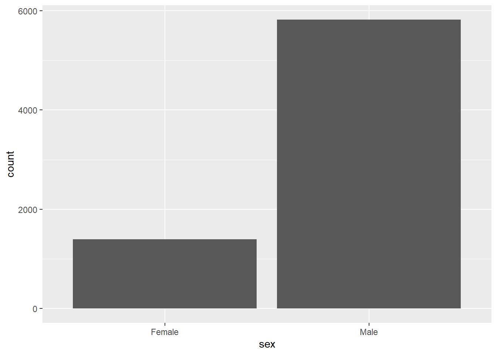
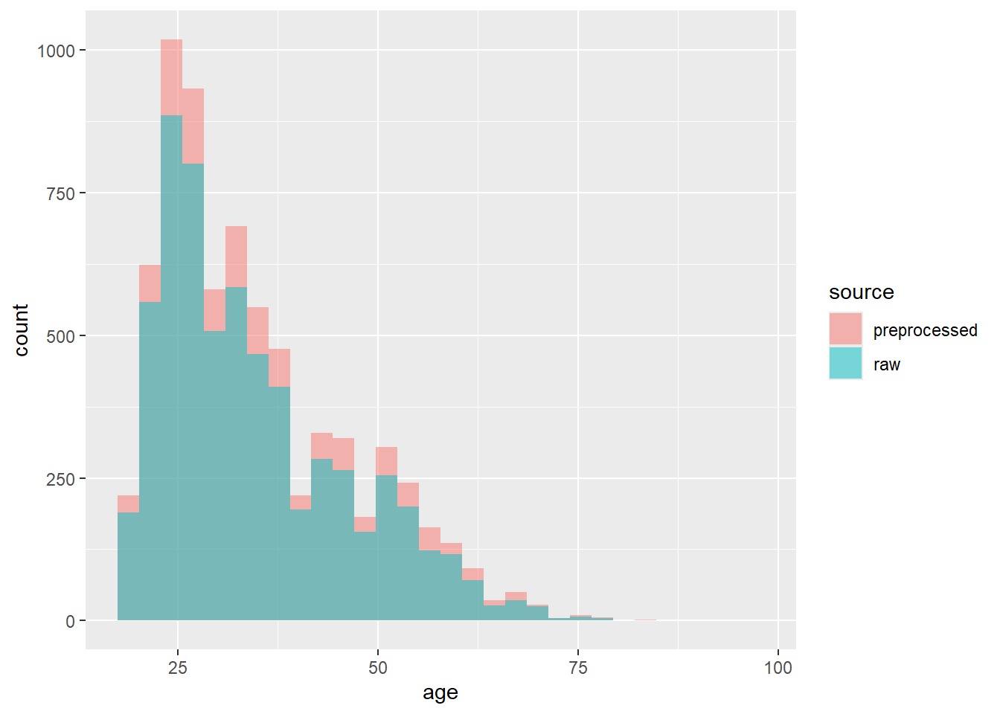
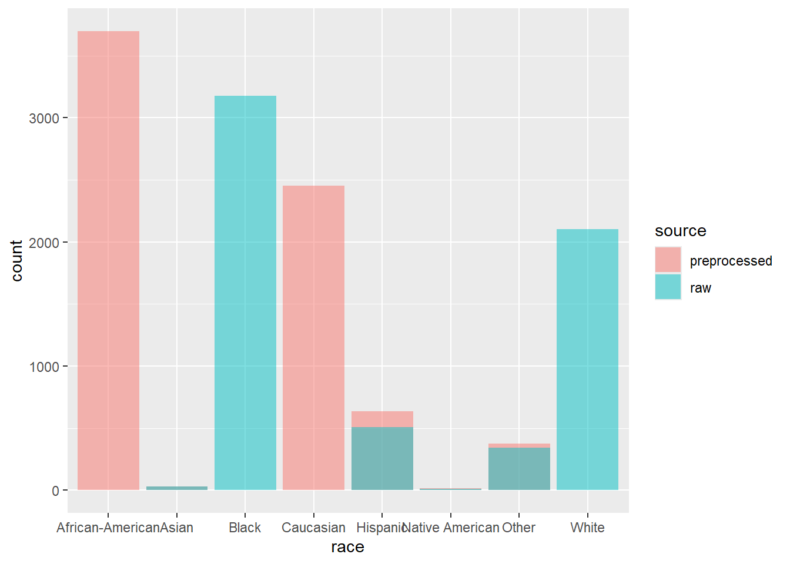
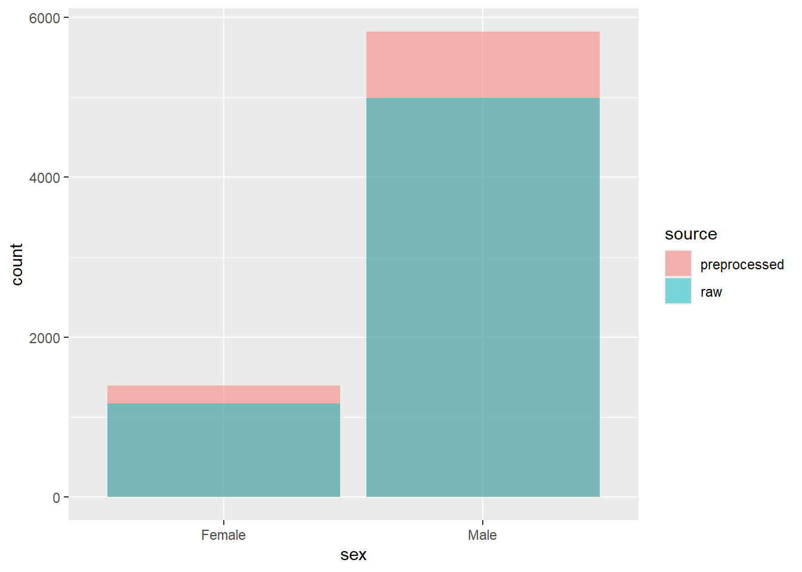
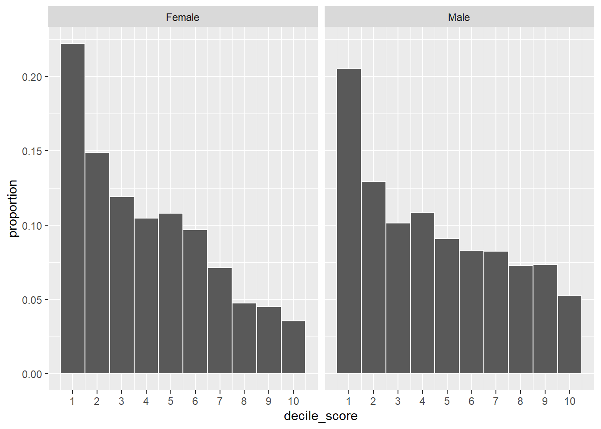
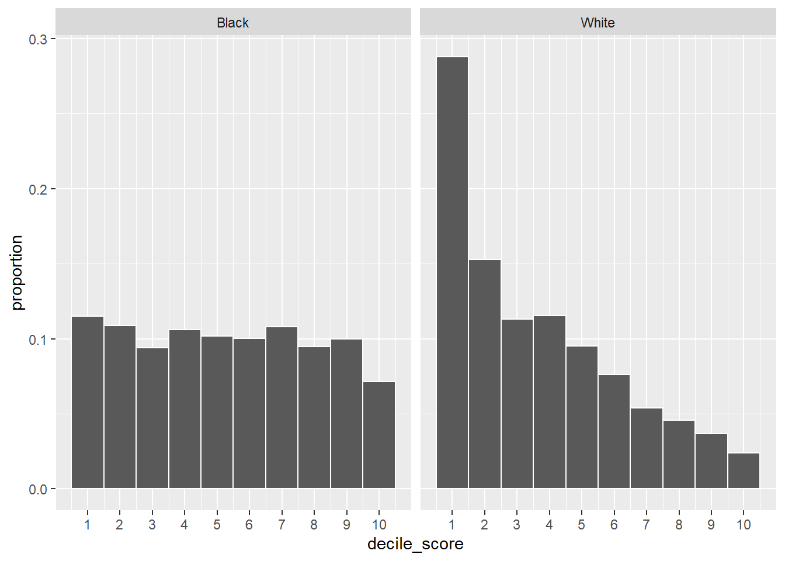
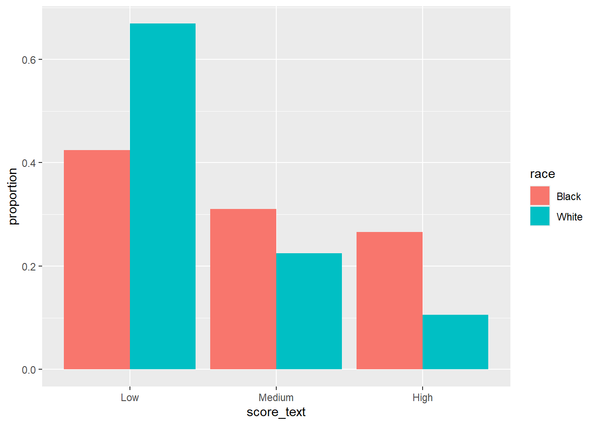

Demonstration 1: ProPublica’s Analysis of the COMPAS Tool
In this demonstration, you will explore the analysis conducted by ProPublica on the COMPAS Recidivism Algorithm.
Notes on the data
Please ensure that your first complete the two readings indicated in the learning materials for this section.
Salient points are highlighted below; see the full description from ProPublica for additional details.
Goal: We looked at more than 10,000 criminal defendants in Broward County, Florida, and compared their predicted recidivism rates with the rate that actually occurred over a two-year period.
COMPAS tool input (data subjects): When most defendants are booked in jail, they respond to a COMPAS questionnaire. Their answers are fed into the COMPAS software to generate several scores including predictions of Risk of Recidivism and Risk of Violent Recidivism.
How COMPAS input was acquired by ProPublica: Through a public records request, ProPublica obtained two years worth of COMPAS scores from the Broward County Sheriff’s Office in Florida. We received data for all 18,610 people who were scored in 2013 and 2014.
COMPAS tool output: Each pretrial defendant received at least three COMPAS scores: “Risk of Recidivism,” “Risk of Violence” and “Risk of Failure to Appear. \[...\] COMPAS scores for each defendant ranged from 1 to 10, with ten being the highest risk. Scores 1 to 4 were labeled by COMPAS as”Low;” 5 to 7 were labeled “Medium;” and 8 to 10 were labeled “High.”
Data integration (record linkage): Starting with the database of COMPAS scores, we built a profile of each person’s criminal history, both before and after they were scored. We collected public criminal records from the Broward County Clerk’s Office website through April 1, 2016. On average, defendants in our dataset were not incarcerated for 622.87 days (sd: 329.19). We matched the criminal records to the COMPAS records using a person’s first and last names and date of birth. This is the same technique used in the Broward County COMPAS validation study conducted by researchers at Florida State University in 2010. We downloaded around 80,000 criminal records from the Broward County Clerk’s Office website.
What is recidivism? Northpointe defined recidivism as “a finger-printable arrest involving a charge and a filing for any uniform crime reporting (UCR) code.” We interpreted that to mean a criminal offense that resulted in a jail booking and took place after the crime for which the person was COMPAS scored. \[...\] For most of our analysis, we defined recidivism as a new arrest within two years.
Setup
Before proceeding through the tasks, ensure that you install the glue package.
Load packages
## Warning: package 'tidyverse' was built under R version 4.2.3## Warning: package 'ggplot2' was built under R version 4.2.3## Warning: package 'tibble' was built under R version 4.2.3## Warning: package 'tidyr' was built under R version 4.2.3## Warning: package 'readr' was built under R version 4.2.3## Warning: package 'purrr' was built under R version 4.2.3## Warning: package 'dplyr' was built under R version 4.2.3## Warning: package 'stringr' was built under R version 4.2.3## Warning: package 'forcats' was built under R version 4.2.3## Warning: package 'lubridate' was built under R version 4.2.3## Warning: package 'glue' was built under R version 4.2.3Load data
url <- "https://raw.githubusercontent.com/propublica/compas-analysis/master/compas-scores-two-years.csv"
compas_raw <-
read_csv(
file = url,
show_col_types = FALSE
)## [1] 7214 53## # A tibble: 6 × 53
## id name first last compas_screening_date sex dob age age_cat
## <dbl> <chr> <chr> <chr> <date> <chr> <date> <dbl> <chr>
## 1 1 miguel… migu… hern… 2013-08-14 Male 1947-04-18 69 Greate…
## 2 3 kevon … kevon dixon 2013-01-27 Male 1982-01-22 34 25 - 45
## 3 4 ed phi… ed philo 2013-04-14 Male 1991-05-14 24 Less t…
## 4 5 marcu … marcu brown 2013-01-13 Male 1993-01-21 23 Less t…
## 5 6 bouthy… bout… pier… 2013-03-26 Male 1973-01-22 43 25 - 45
## 6 7 marsha… mars… miles 2013-11-30 Male 1971-08-22 44 25 - 45
## # ℹ 44 more variables: race <chr>, juv_fel_count <dbl>,
## # decile_score...12 <dbl>, juv_misd_count <dbl>, juv_other_count <dbl>,
## # priors_count...15 <dbl>, days_b_screening_arrest <dbl>, c_jail_in <dttm>,
## # c_jail_out <dttm>, c_case_number <chr>, c_offense_date <date>,
## # c_arrest_date <date>, c_days_from_compas <dbl>, c_charge_degree <chr>,
## # c_charge_desc <chr>, is_recid <dbl>, r_case_number <chr>,
## # r_charge_degree <chr>, r_days_from_arrest <dbl>, r_offense_date <date>, …Inspect data
For convenience, here is a table of variable definitions:
| Variable | Description |
|---|---|
| age | Age of the defendant |
| age_cat | Age category. It can be < 25, 25-45, >45 |
| sex | Sex of the defendant. It is either “Male” or “Female” |
| race | Race of the defendant. It can be “African-American”, “Caucasian”, “Hispanic”, “Asian”, or “Other” |
| c_charge_degree | Charge. Either “M” for misdemeanor, “F” for felony, or “O” (not causing jail time) |
| priors_count | Count of prior crimes committed by the defendant |
| days_b_screening_arrest | Days between the arrest and COMPAS screening |
| decile_score | The COMPAS score estimated by the system. It is between 0-10 |
| score_text | Decile score. It can be “Low” (1-4), “Medium” (5-7), or “High” (8-10) |
| is_recid | Indicates if the defendant recidivated. It can be 0, 1, or -1 |
| two_year_recid | Indicates if the defendant recidivated within two years of COMPAS assessment |
| c_jail_in | Date the defendant was in jail |
| c_jail_out | Date when the defendant was released from jail |
Plot the distribution of age, race, and sex in the imported data (compas_raw):



Preprocess data
ProPublica implemented a few pre-processing steps. First, they generated a subset of the data with a few variables of interest. Here, we select even fewer variables, keeping only those that we will use in this notebook. We also relabel the race column.
cols <-
c("id", "age", "c_charge_degree", "race", "age_cat",
"score_text", "sex", "priors_count...15",
"days_b_screening_arrest", "decile_score...12",
"is_recid", "two_year_recid")
compas_selected <-
compas_raw |>
select(
all_of(cols)
) |>
rename(
priors_count = priors_count...15,
decile_score = decile_score...12
) |>
mutate(
race = case_when(
race == "African-American" ~ "Black",
race == "Caucasian" ~ "White",
TRUE ~ race
)
)
head(compas_selected)## # A tibble: 6 × 12
## id age c_charge_degree race age_cat score_text sex priors_count
## <dbl> <dbl> <chr> <chr> <chr> <chr> <chr> <dbl>
## 1 1 69 F Other Greater than … Low Male 0
## 2 3 34 F Black 25 - 45 Low Male 0
## 3 4 24 F Black Less than 25 Low Male 4
## 4 5 23 F Black Less than 25 High Male 1
## 5 6 43 F Other 25 - 45 Low Male 2
## 6 7 44 M Other 25 - 45 Low Male 0
## # ℹ 4 more variables: days_b_screening_arrest <dbl>, decile_score <dbl>,
## # is_recid <dbl>, two_year_recid <dbl>## Rows: 7,214
## Columns: 12
## $ id <dbl> 1, 3, 4, 5, 6, 7, 8, 9, 10, 13, 14, 15, 16, 18…
## $ age <dbl> 69, 34, 24, 23, 43, 44, 41, 43, 39, 21, 27, 23…
## $ c_charge_degree <chr> "F", "F", "F", "F", "F", "M", "F", "F", "M", "…
## $ race <chr> "Other", "Black", "Black", "Black", "Other", "…
## $ age_cat <chr> "Greater than 45", "25 - 45", "Less than 25", …
## $ score_text <chr> "Low", "Low", "Low", "High", "Low", "Low", "Me…
## $ sex <chr> "Male", "Male", "Male", "Male", "Male", "Male"…
## $ priors_count <dbl> 0, 0, 4, 1, 2, 0, 14, 3, 0, 1, 0, 3, 0, 0, 1, …
## $ days_b_screening_arrest <dbl> -1, -1, -1, NA, NA, 0, -1, -1, -1, 428, -1, 0,…
## $ decile_score <dbl> 1, 3, 4, 8, 1, 1, 6, 4, 1, 3, 4, 6, 1, 4, 1, 3…
## $ is_recid <dbl> 0, 1, 1, 0, 0, 0, 1, 0, 0, 1, 0, 1, 0, 0, 1, 1…
## $ two_year_recid <dbl> 0, 1, 1, 0, 0, 0, 1, 0, 0, 1, 0, 1, 0, 0, 1, 1…Take a moment to get a feel for the variables and structure of the data. ProPublica filtered the above data by removing rows where:
- The COMPAS score is missing.
- The charge date of the defendant’s COMPAS-scored crime was not within 30 days from the date of arrest. ProPublica assumed that the offense may not be correct in these cases.
- The recividist flag is “-1”. In such cases, ProPublica could not find a COMPAS record at all.
- The charge is “O”. These are ordinary traffic offenses and do not result in jail time.
We implement these conditions here:
compas <-
compas_selected |>
filter(
score_text != "N/A",
days_b_screening_arrest <= 30,
days_b_screening_arrest >= -30,
is_recid != -1,
c_charge_degree != "O"
)Note that ProPublica only included people who had recidivated within two years or had at least two years outside a correctional facility. This pre-processing step is “baked in” to the data that we imported from GitHub in this notebook.
Check the dimensions (i.e. the number of variables and observations) of the imported (compas_raw) and preprocessed (compas) data:
## Imported data: 7214, 53## Data after selecting variables: 7214, 12## Data after filtering observations: 6172, 12Take the additional step of making sure that the decile score (discussed below) is numeric:
Inspect data again
Re-inspect salient variables in the data after the preprocessing steps. Plot the distribution of age, race, and sex in the preprocessed data (compas) and compare these distributions to the imported data (compas_raw):
compas_compare <-
bind_rows(
mutate(compas, source = "raw"),
mutate(compas_raw, source = "preprocessed"),
)
compas_compare |>
ggplot(aes(age, fill = source)) +
geom_histogram(alpha = 0.5, position = "identity")## `stat_bin()` using `bins = 30`. Pick better value with `binwidth`.


Observe that we are iterating through the data analysis: import, inspect & profile, preprocess, and profile again. Generate a crosstab summarizing the number of observations by race and sex:
##
## Female Male
## Asian 2 29
## Black 549 2626
## Hispanic 82 427
## Native American 2 9
## Other 58 285
## White 482 1621Exploratory analysis
Let’s turn our focus to the primary variable of interest: the COMPAS recidivism score. In this exploratory analysis, we are interested in the variable named decile_score.
The ProPublica analysis notes: “Judges are often presented with two sets of scores from the COMPAS system: one that classifies people into high, medium or low risk, and a corresponding decile score.”
Plot the distribution of decile_score for males and for females. To what extent do these distributions differ?
# plot decile score by sex
compas |>
ggplot(aes(x = decile_score)) +
geom_histogram(
aes(y = stat(density * width)),
binwidth = 1, color = "white"
) +
scale_x_continuous(breaks = 1:10) +
scale_y_continuous("proportion") +
facet_wrap(~ sex)## Warning: `stat(density * width)` was deprecated in ggplot2 3.4.0.
## ℹ Please use `after_stat(density * width)` instead.
## This warning is displayed once every 8 hours.
## Call `lifecycle::last_lifecycle_warnings()` to see where this warning was
## generated.
What about race?
# plot decile score by race
compas |>
filter(race %in% c("Black", "White")) |>
ggplot(aes(x = decile_score)) +
geom_histogram(
aes(y = after_stat(density * width)),
binwidth = 1, color = "white"
) +
scale_x_continuous(breaks = 1:10) +
scale_y_continuous("proportion") +
facet_wrap(~ race)
👉 Exercise
Summarise the difference between the distribution of decile scores for Black defendants and White defendants in this text cell:
Your answer here
Risk labels
Plot the distribution of COMPAS-assigned “risk labels” (the variable is named score_text) for Black defendants and White defendants:
# plot risk labels by race
compas |>
mutate(
score_text = factor(
score_text,
levels = c("Low", "Medium", "High")
)
) |>
filter(race %in% c("Black", "White")) |>
ggplot(aes(x = score_text, group = race, fill = race)) +
geom_bar(aes(y = after_stat(prop)), position = "dodge") +
scale_y_continuous("proportion")
Bias in COMPAS
ProPublica focused on racial bias in the COMPAS algorithm. In general terms, ProPublica analyzed (i) how the risk scores vary by race and (ii) the extent to which the risk labels assigned to defendants matches up with their observed recidivism and how this varies by race. We will (approximately) reproduce this analysis below.
Preprocess data for logistic regression
ProPublica used a logistic regression model to analyze variation in the risk scores by race. In their analysis, they considered a “medium” and “high” risk score to be “high”, and “low” to be low. We will prepare the data accordingly, with low = 0 and high = 1:
compas <-
compas |>
mutate(score_binary = ifelse(score_text == "Low", 0, 1))
table(compas$score_text, compas$score_binary)##
## 0 1
## High 0 1144
## Low 3421 0
## Medium 0 1607Estimate the logistic regression model
model <-
glm(
score_binary ~
priors_count +
two_year_recid +
c_charge_degree +
age_cat +
race +
sex,
data = compas,
family = binomial(link = "logit")
)
summary(model)##
## Call:
## glm(formula = score_binary ~ priors_count + two_year_recid +
## c_charge_degree + age_cat + race + sex, family = binomial(link = "logit"),
## data = compas)
##
## Deviance Residuals:
## Min 1Q Median 3Q Max
## -2.9966 -0.7919 -0.3303 0.8121 2.6024
##
## Coefficients:
## Estimate Std. Error z value Pr(>|z|)
## (Intercept) -1.55869 0.48236 -3.231 0.00123 **
## priors_count 0.26895 0.01110 24.221 < 2e-16 ***
## two_year_recid 0.68586 0.06402 10.713 < 2e-16 ***
## c_charge_degreeM -0.31124 0.06655 -4.677 2.91e-06 ***
## age_catGreater than 45 -1.35563 0.09908 -13.682 < 2e-16 ***
## age_catLess than 25 1.30839 0.07593 17.232 < 2e-16 ***
## raceBlack 0.73162 0.47708 1.534 0.12514
## raceHispanic -0.17398 0.48897 -0.356 0.72199
## raceNative American 1.64862 0.89972 1.832 0.06689 .
## raceOther -0.57193 0.49897 -1.146 0.25170
## raceWhite 0.25441 0.47821 0.532 0.59472
## sexMale -0.22127 0.07951 -2.783 0.00539 **
## ---
## Signif. codes: 0 '***' 0.001 '**' 0.01 '*' 0.05 '.' 0.1 ' ' 1
##
## (Dispersion parameter for binomial family taken to be 1)
##
## Null deviance: 8483.3 on 6171 degrees of freedom
## Residual deviance: 6168.4 on 6160 degrees of freedom
## AIC: 6192.4
##
## Number of Fisher Scoring iterations: 5Interpret estimates
Take a moment to read through the model summary.
One way to interpret the estimates is by calculating odds ratios. To calculate odds ratios, we take the exponential of the coefficients. For example, taking the exponential of the coefficient for defendants aged less than 25 (\(\beta_{age<25}\) = 1.30839) will return the odds of score_text taking the value “high” for those aged under 25 relative to those aged 25-45. Calculate this odds ratio here:
## [1] 3.700212In words, the odds that COMPAS labeled a defendant as “high risk” of recidivism is 3.7 times greater for someone aged 25-45.
Next, calculate the odds ratio for all of the coefficients in the model:
## (Intercept) priors_count two_year_recid
## 0.2104123 1.3085835 1.9854836
## c_charge_degreeM age_catGreater than 45 age_catLess than 25
## 0.7325374 0.2577840 3.7002128
## raceBlack raceHispanic raceNative American
## 2.0784485 0.8403136 5.1998120
## raceOther raceWhite sexMale
## 0.5644338 1.2897066 0.8015029Take a moment to read through these coefficients. What is the reference category for each variable? (e.g. For females, the reference category is male.) Think in terms of comparisons, for example:
A person with a value of \[ \] on variable \[ \] is \[ \] times more likely to be labeled high risk compared to a person with a value of \[ \] on variable \[ \]
In the female example above, this could be stated:
“A person with a value of female on variable sex is 1.25 times more likely to be labeled high risk compared to a person with a value of male on variable sex”
Of course, we should be more straightforward when writing up results. “A person with a value of male on variable sex” is rather verbose; “males” will suffice. Interpreting model estimates in straightforward terms is an underrated skill.
Predictive Accuracy
In terms of fairness, ProPublica focused on the predictive accuracy of the COMPAS algorithm. In this case, predictive accuracy refers to the concordance between a person’s recidivism and the label assigned to that person by the COMPAS algorithm. For instance, how often did COMPAS predict that a person was at “high risk” of recidivism and that person in fact recidivated within two years? We can think of this in terms of a 2x2 table:
| Did not recidivate | Recidivated | |
|---|---|---|
| Labeled high risk | A | B |
| Labeled low risk | C | D |
ProPublica reported A and D for black defendants and white defendants, separately.
👉 Exercise
What are generic terms for A and D? Why focus on A and D?
Your answer here
ProPublica used a somewhat different data set to calculate the predictive accuracy of COMPAS. In this section we will use the compas data we preprocessed above for brevity. Note therefore that the numbers we calculate below will not match those reported by ProPublica. Let’s generate a crosstab of the variable denoting recidivism within two years (is_recid) and the binary score variable (score_binary):
##
## 0 1
## 0 2248 934
## 1 1173 1817Based on this crosstab, input the number of true positives, false positives, true negatives, and false negatives:
You can calculate the false positive rate by taking FP / (FP + TN), where FP is the number of false positives and TN is the number of true negatives. Calculate the false positive rate:
glue(
"All defendants, false positive rate:
{(false_positive / (false_positive + true_negative) * 100)}"
)## All defendants, false positive rate:
## 29.3526084223759Now calculate the false negative rate: (hint, replace the terms in the false positive rate formula in the previous text cell)
glue(
"All defendants, false negative rate:
{(false_negative / (false_negative + true_positive) * 100)}"
)## All defendants, false negative rate:
## 39.2307692307692How do the false positive and false negative rates vary by race? Calculate the false positive rate and false negative rate for White defendants:
rates <-
compas |>
filter(race %in% c("Black", "White")) |>
group_by(race) |>
count(score_binary, is_recid)# white defendants
w_tp = 430
w_fp = 266
w_tn = 963
w_fn = 444
glue("White defendants, false positive rate: {(w_fp / (w_fp + w_tn) * 100)}")## White defendants, false positive rate: 21.6436126932465## White defendants, false negative rate: 50.8009153318078Lastly, calculate the false positive rate and false negative rate for Black defendants:
b_tp = 1248
b_fp = 581
b_tn = 821
b_fn = 525
glue("Black defendants, false positive rate: {(b_fp / (b_fp + b_tn) * 100)}")## Black defendants, false positive rate: 41.4407988587732## Black defendants, false negative rate: 29.6108291032149Take a moment to review and compare the false positive rates and false negative rates above.